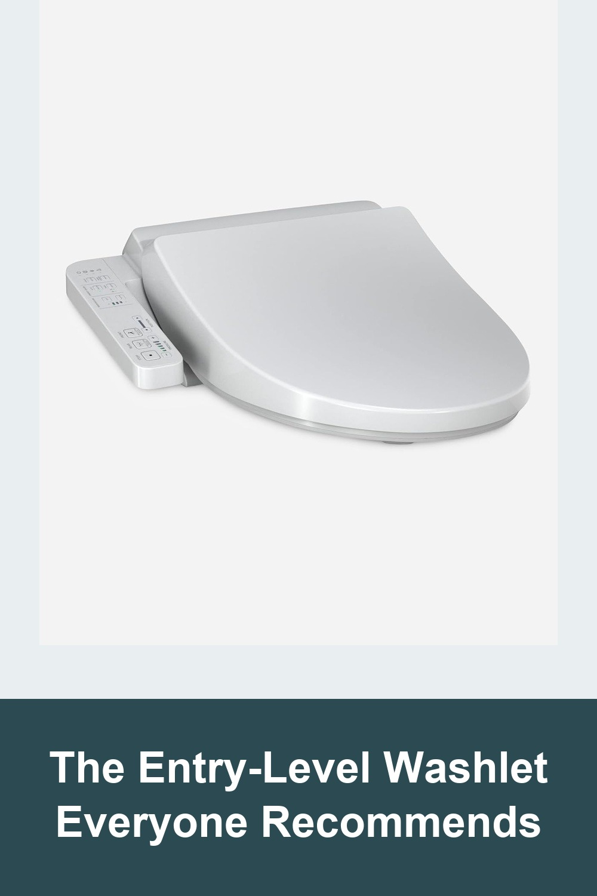
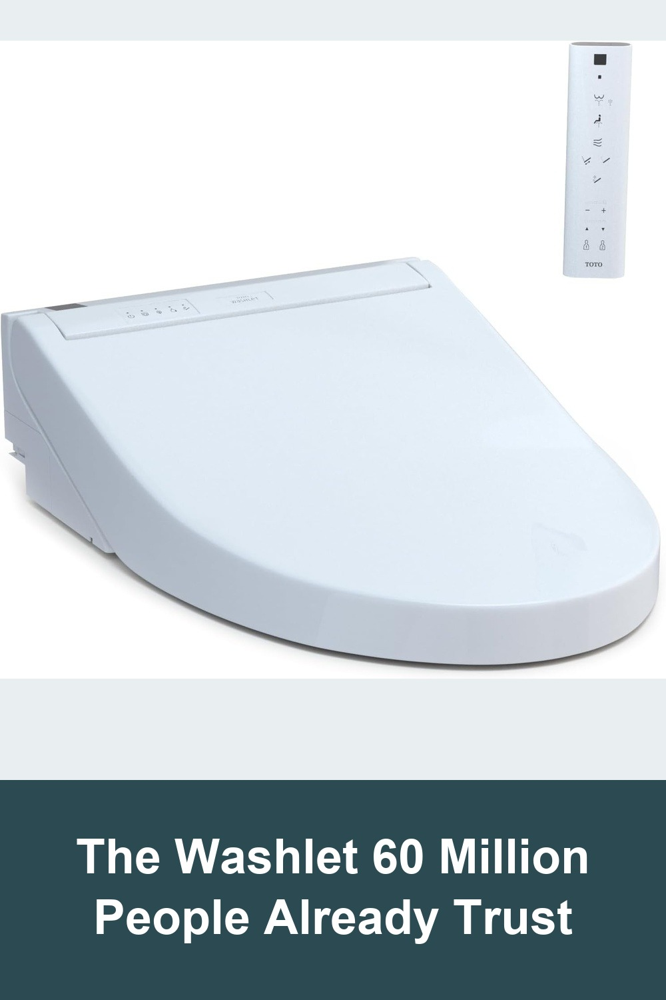
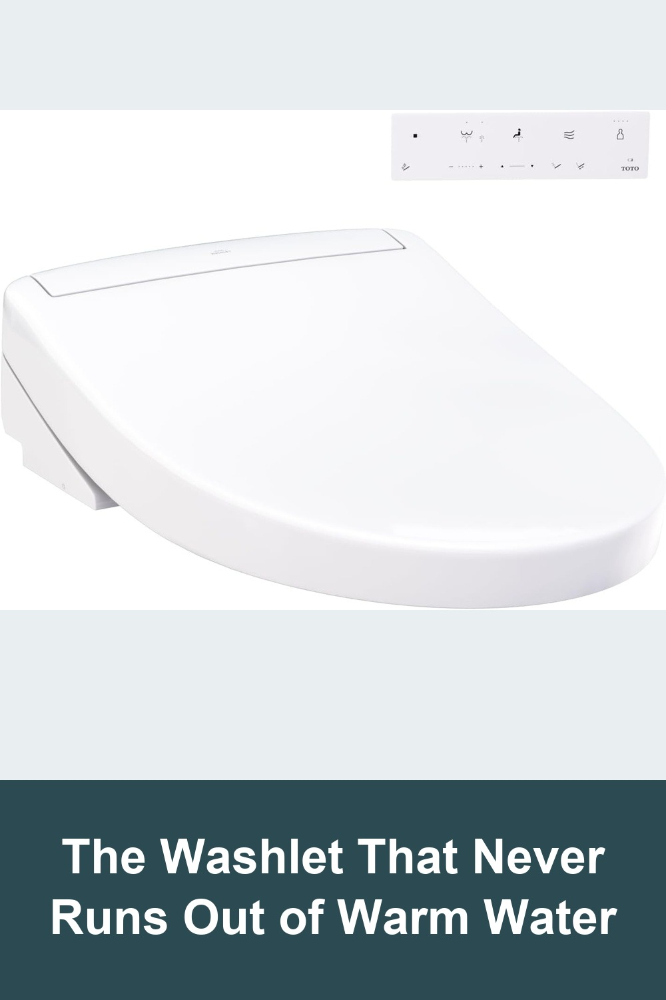

TOTO WASHLET A2 Electronic Bidet Toilet Seat with Heated Seat and SoftClose Lid
TOTO's most accessible WASHLET — a heated seat, adjustable warm-water front and rear wash, and a self-cleaning wand, all controlled from a simple attached side panel. No remote to lose, no batteries to replace. Installs on your existing toilet in about 15 minutes.
I had bladder surgery and later developed a UTI from a catheter, and this bidet was a lifesaver. The warm water made it so much easier to stay clean and gave real relief from the pain. I also developed hemorrhoids, and the gentle warm spray helped soothe the soreness more than I ever expected... it's very well made, user-friendly, and worth every penny.— verified Amazon buyer
View on Amazon →
TOTO WASHLET C5 Electronic Bidet Toilet Seat with PREMIST and EWATER+ Wand Cleaning
TOTO's best-selling WASHLET, now with a wireless remote, PREMIST bowl pre-misting, and EWATER+ self-cleaning that sanitizes the wand before and after every use. Oscillating and pulsating spray settings, five heat levels, and a warm air dryer round it out.
Never had a bidet before but had a friend recommend to me. I picked this one and have no regrets... Toilet paper consumption is drastically reduced, saving money and helping to extend the life of my septic system. I'm amazed at how well it cleans, and how lousy toilet paper actually was... A bidet is no longer a luxury, it's now a necessity!— verified Amazon buyer
View on Amazon →
TOTO WASHLET S5 Electronic Bidet Toilet Seat with Instantaneous Water Heating
TOTO's flagship S5 swaps the tank for instantaneous, continuous water heating, so the warm water never runs cold mid-use. Add an illuminated remote, a built-in nightlight, PREMIST, and EWATER+ self-cleaning for the closest thing to a five-star hotel bathroom at home.
I've never been a fan of bidets, and I've traveled all over the world and seen a few. But this thing is amazing!... The installation was very straightforward... My wife and I both love the warm seat. Sounds weird, but it's just welcoming... Highly recommended~— verified Amazon buyer
View on Amazon →